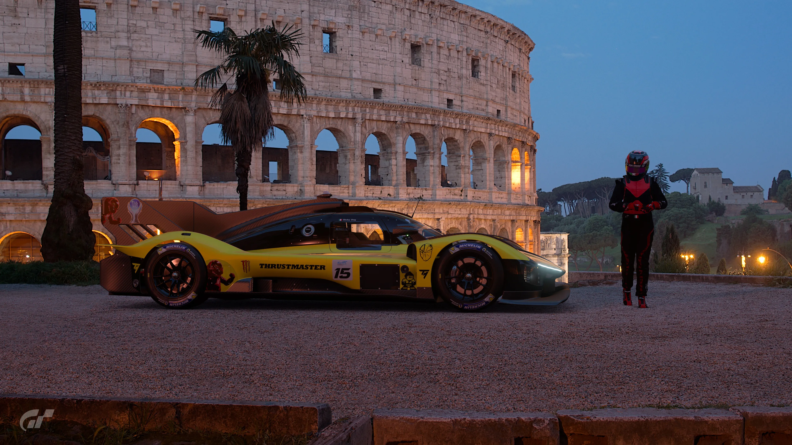
Dopotutto, una persona non sanissima di mente sa bene come dare uno scopo a ciò che maltratta (o sfrutta benissimo) nel tempo ⌚
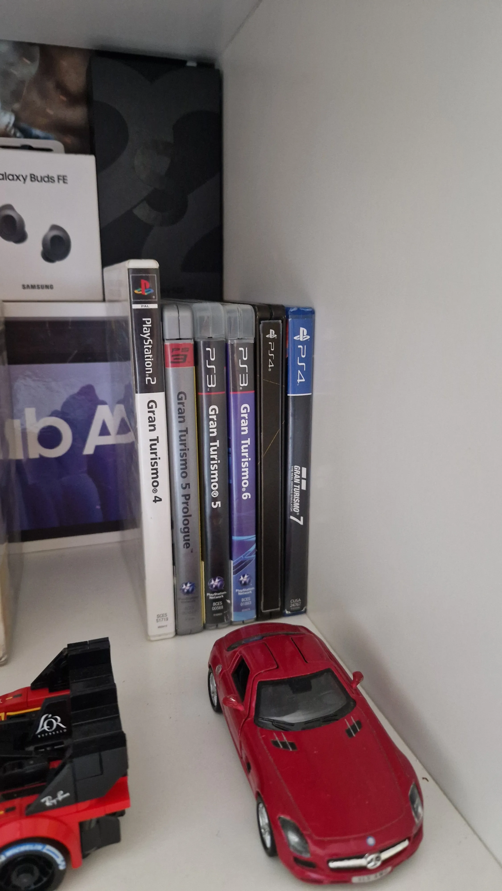
Da amante del supporto fisico, sentire il lettore che lavora è la sensazione che il digitale non può mai sostituire 💿
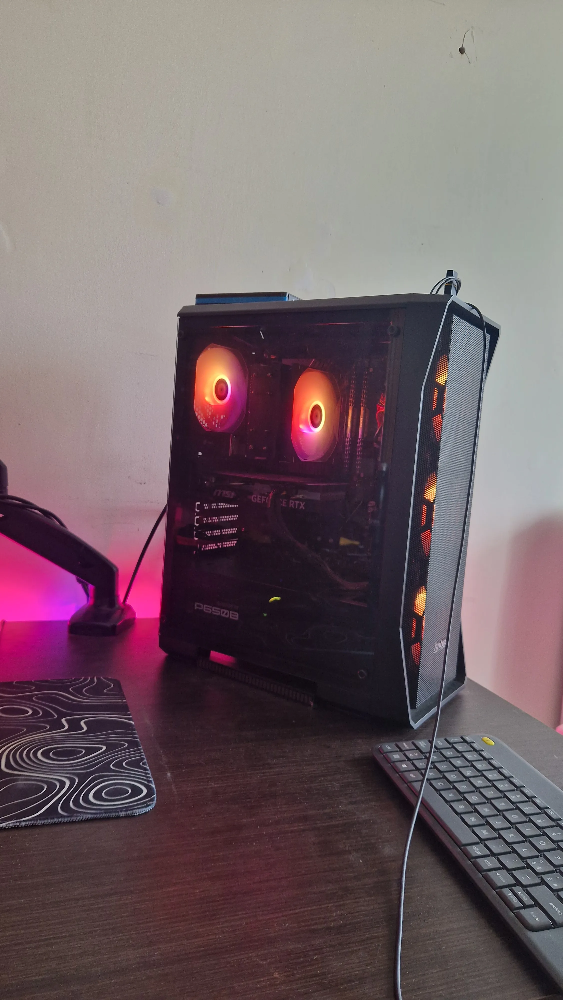
Il SimRacing (non troppo) serio e le registrazioni di ciò che capita mentre guido, che siano Bare a 4 ruote o auto incollate a terra 🖥️
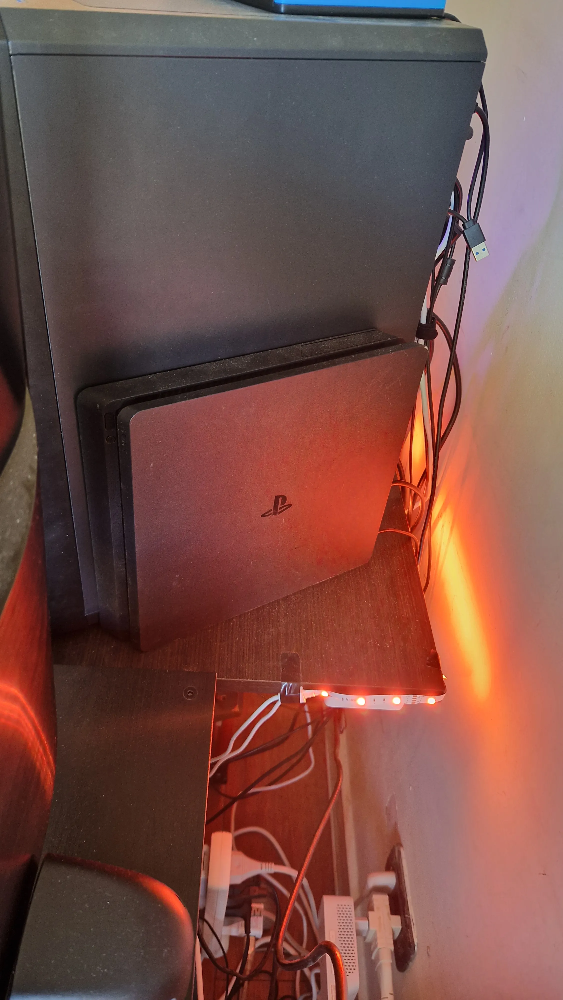
Silenziosa (forse) e nascosta dietro il PC, ma letale e ancora presente anche nella generazione attuale che avanza 🛩️
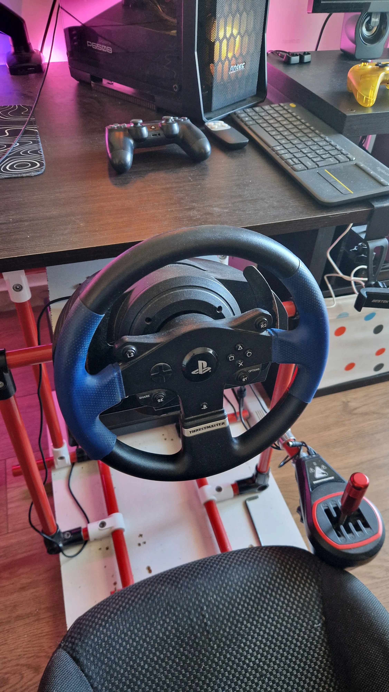
Fortuna (troppa) vuole che non si frantumi in mano quando cerco di fare il pazzo (sempre). Consiglio? Maltrattarlo per 4 anni 😉
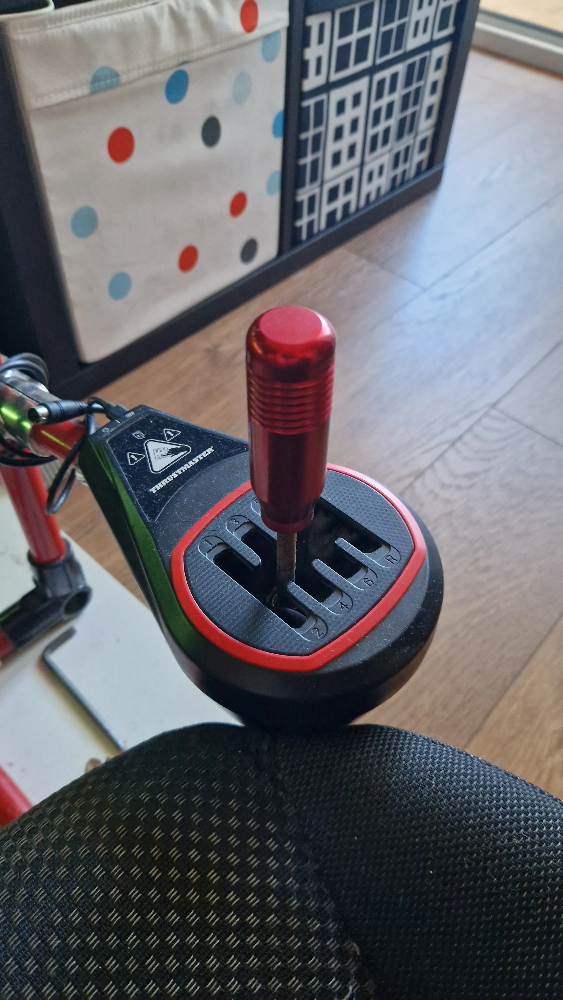
Il suo lavoro è di resistere ad ogni palata che gli tiro, pensando di guidare come Senna, anche solo con una Panda del '90 🛞
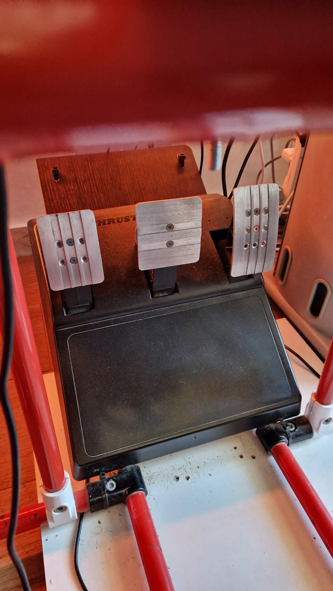
Si dice che 3 pedali siano meglio di 2 (vero), anche se il freno ha quella sensazione spugnosa che ti fa dubitare delle tue scelte di vita ad ogni staccata violenta 💨
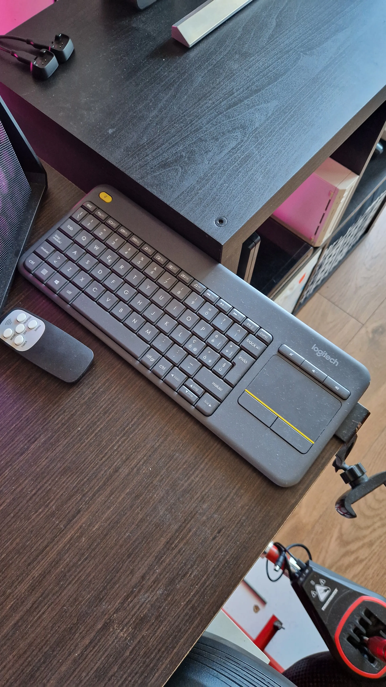
L'arma del vero SimRacer. L'unica cosa che mi separa dal dovermi alzare dal sedile ogni volta che Windows decide di aggiornarsi o un simulatore crasha ⌨️
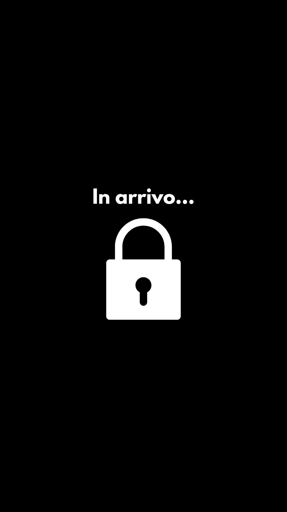
Ancora nascosto. Attendi la mia prossima idea folle, ci sto pensando! 👍
Qua invece uso attrezzatura migliore per evitare di farmi vedere come un personaggio Horror e sentirmi peggio di un annuncio delle casse al supermercato 📹🎙️
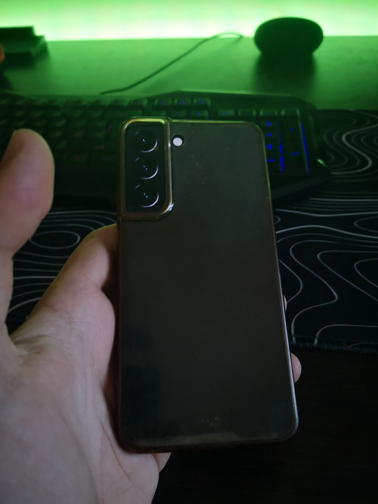
Scalda più di un V12 e la batteria dura quanto una canzone di Ricky Dog, ma con la luce giusta gira video che il tuo iPhone (se cel'hai) sogna. #ShotOnP20 📱
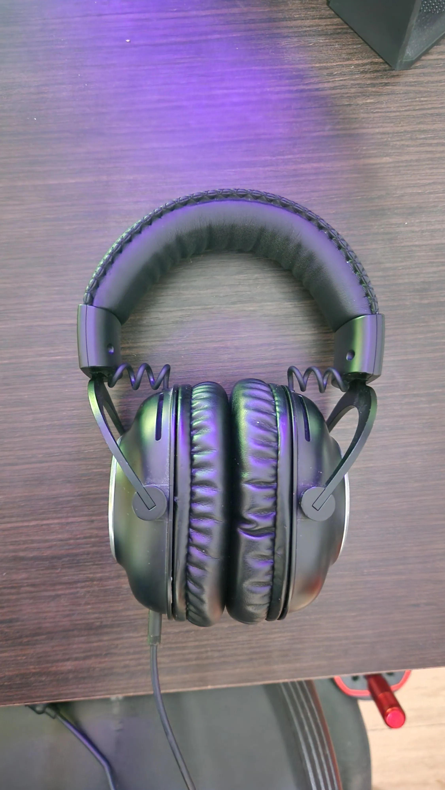
Per isolarmi dal resto del mondo per montare l'audio al millisecondo e sentire se il motore sbiella. Attenzione a chiamarmi: SESSIONE IN CORSO! 🎧
Addio Razer Seiren X. In arrivo il microfono dinamico per evitare di far sentire pure il respiro dei vicini di casa e di Matt Bellamy combinati 🎤
Senza di lui non si montano i video, non si guida e non si impreca su Windows. Onnipresente (basta dire presente!) 🖥️
In arrivo per le riprese dinamiche. Un microfonino wireless per evitare di girare con i cavi intrecciati come le cuffiette nel 2010 🎤
Essenziale per non sembrare uscito da uno spin-off di Silent Hill quando registro al buio 🔦
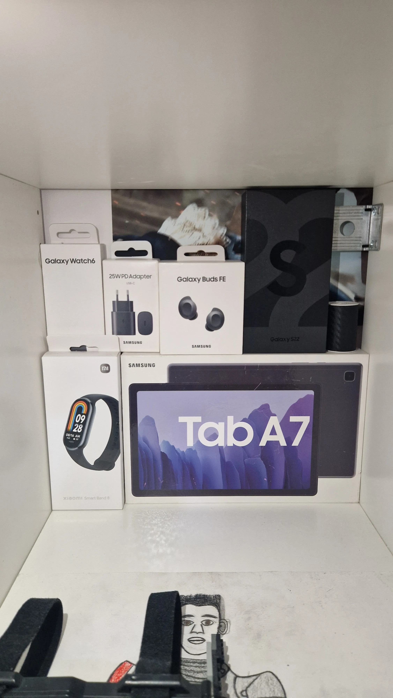
L'ecosistema che manda avanti il giorno. Con S22, Watch 6, Buds FE e Tab A7, rifiutare Samsung è impossibile ✨
Ancora nascosto. Attendi la mia prossima idea folle, ci sto pensando! 👍
Recupero hardware fallito per suonare giocando. Se una console è stata un flop, probabilmente ha l'utilità che cerco 🎮
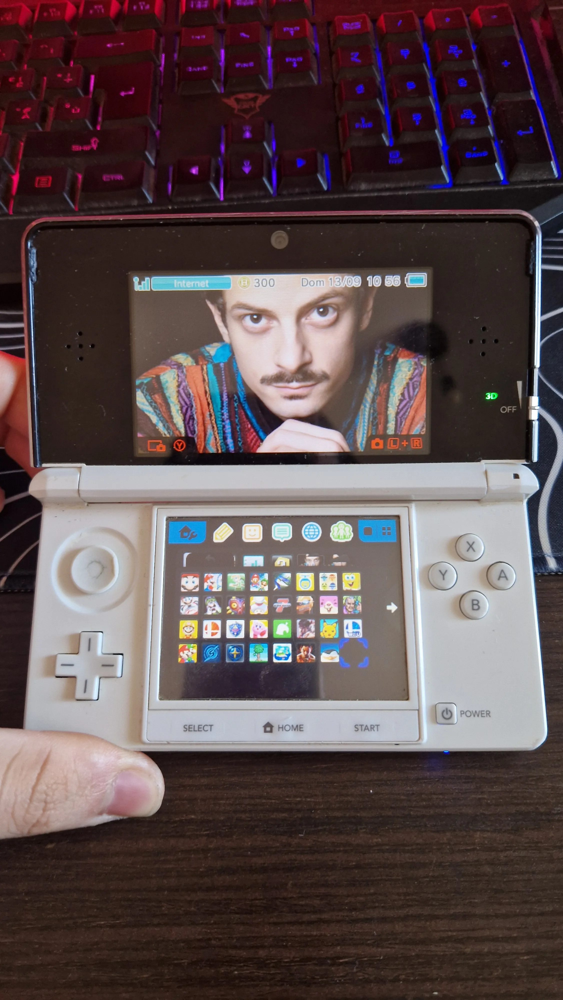
Bei tempi, quando si usava al posto dei telefoni... Lo uso come sintetizzatore per creare synth (non) normali che il tuo iPhone si sogna 〰️
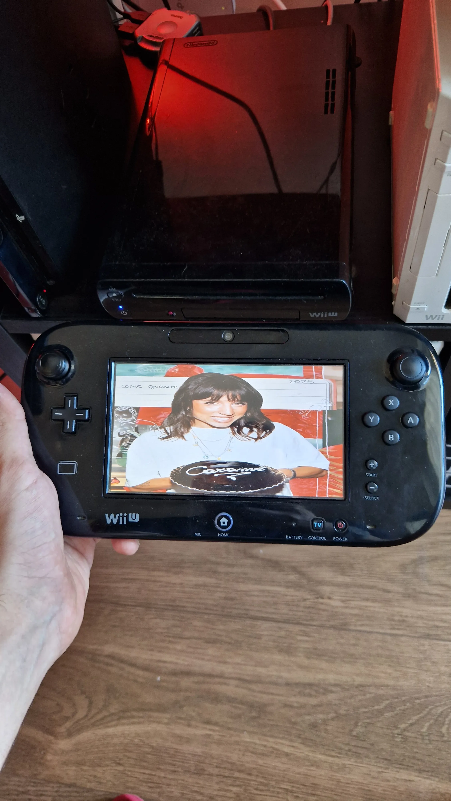
Eh già. Il disastro del 2012 è il mio reattore nucleare: emette suoni ideali per percussioni. Un flop commerciale, un top per il sottoscritto 🥁
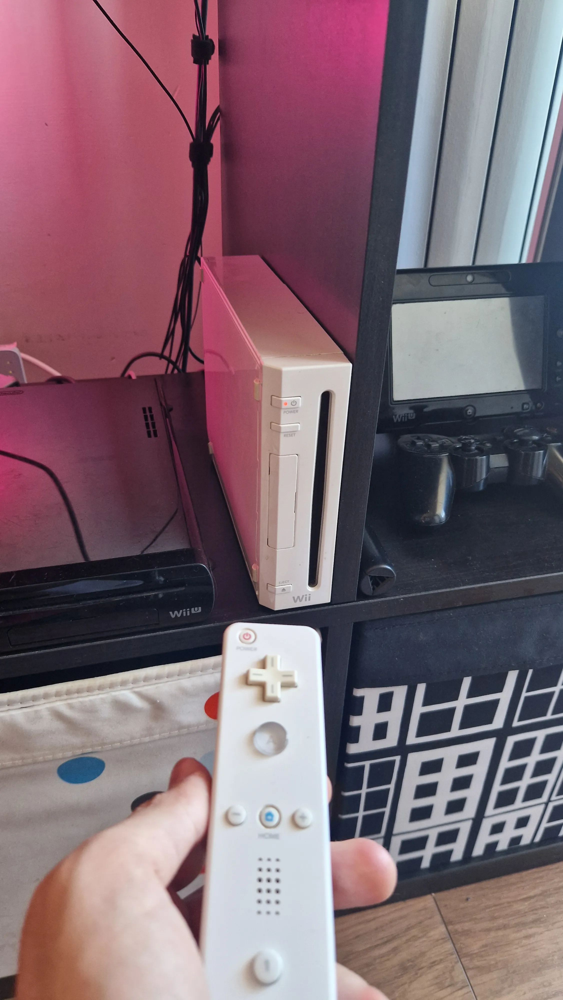
Il telecomando giavellotto. La uso per la nostalgia analogica e i glitch dei canali 📺
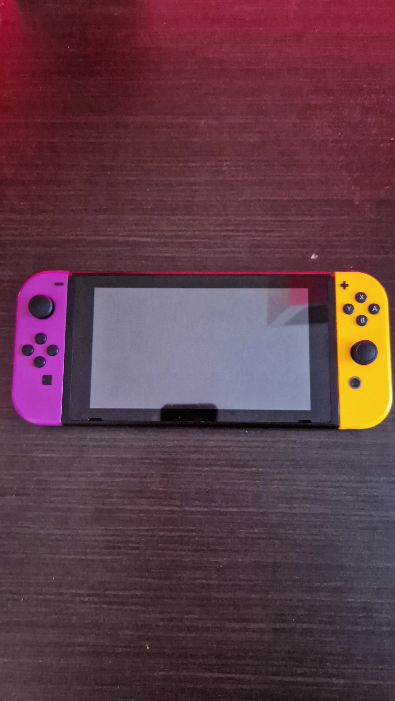
Non si tocca il software, ma il suo hardware è una miniera d'oro di click e suoni tattili odierni 🎮
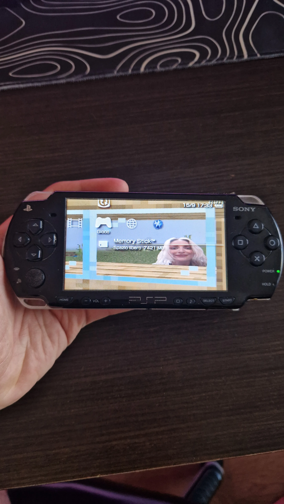
Il design del Futuro Passato. Perfetta per catturare il rumore del UMD, da 20 anni ancora molto... grattante 💽
Presente già 2 volte e pure qua. Il laboratorio dove Audacity e Cakewalk trasformano i fallimenti hardware in Campioni Campionati e tracce 📺
Ancora nascosto. Attendi la mia prossima idea folle, ci sto pensando! 👍
Ancora nascosto. Attendi la mia prossima idea folle, ci sto pensando! 👍
Hai dubbi sui miei strumenti o sul mio lavoro?
Clicca qui per saperne di più :)Disponibile per collaborazioni con artisti e brand, anche per consulenze.